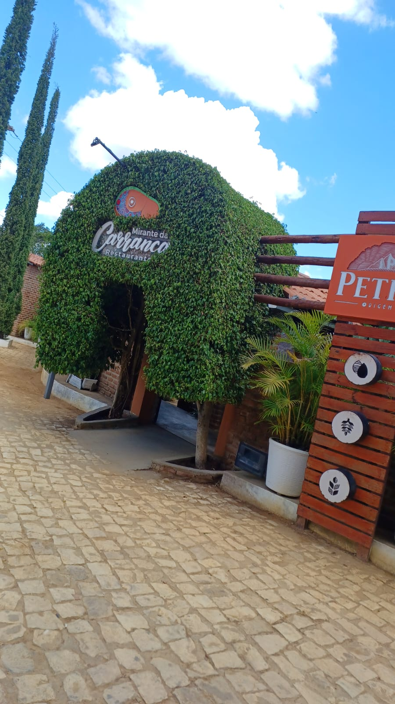
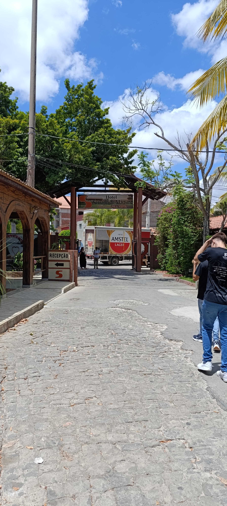

Mirante do Carranca
O Mirante do Carranca, em Martins-RN, é um dos pontos mais deslumbrantes da cidade, oferecendo uma vista panorâmica de tirar o fôlego. Situado em uma posição privilegiada na serra, o mirante permite contemplar a vastidão do Vale do Apodi e as paisagens verdejantes que cercam a região. É um lugar perfeito para admirar o pôr do sol, com cores que transformam o horizonte em um espetáculo natural. Além de sua beleza cênica, o local também proporciona momentos de tranquilidade e conexão com a natureza, sendo um destino imperdível para os visitantes que buscam inspiração e encantamento em Martins.
Hotel Serrano
O Hotel Serrano, em Martins-RN, é um dos mais tradicionais e acolhedores da região, combinando conforto e hospitalidade em meio à beleza da serra. Com uma arquitetura charmosa e uma localização privilegiada, o hotel oferece vistas deslumbrantes, clima ameno e tranquilidade, características marcantes da cidade. Seus quartos bem equipados, a culinária regional no restaurante e áreas de lazer, como piscina e jardins, garantem uma experiência completa para os hóspedes. Ideal para quem busca descanso ou aventura, o Hotel Serrano é referência em qualidade e se destaca como um dos principais pontos de hospedagem em Martins.
